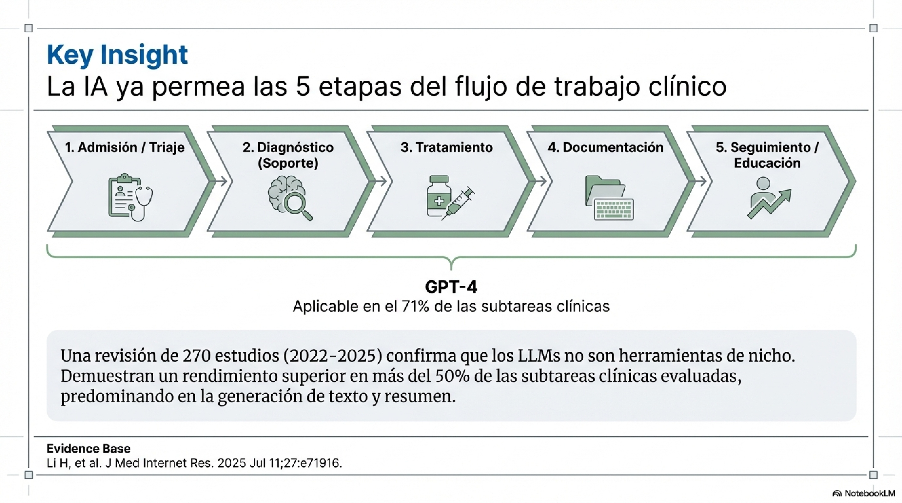
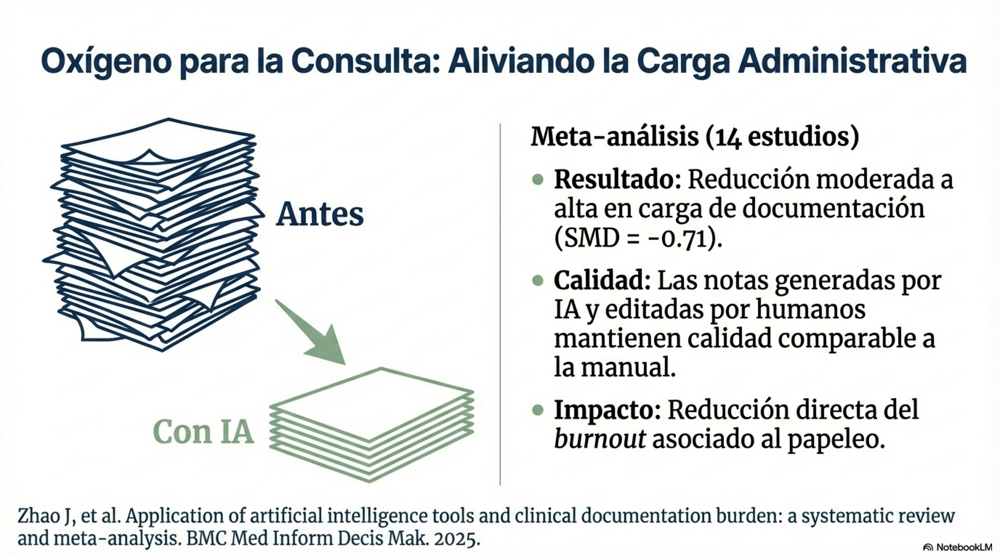
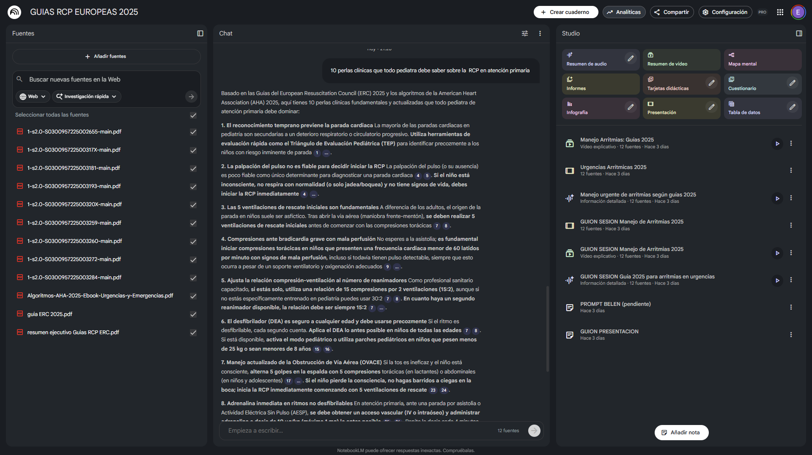

Declaración de Conflictos de Interés
El ponente declara no tener conflictos de interés
relacionados con el contenido de este seminario.
Las herramientas mencionadas son de uso personal y código
abierto.
No existe vinculación comercial con ningún proveedor de IA.
Objetivos del Seminario
Al finalizar, serás capaz de:
Soporte al diagnóstico diferencial, interpretación de pruebas, tareas administrativas...
Valoración crítica antes de aplicar respuestas de IA en la práctica clínica.
Método RECORD: distinguir instrucciones eficaces de las que no lo son.
🗺️ Hoja de Ruta: 120 minutos
Haz clic en cualquier bloque para saltar directamente
Bloque 1
Ruptura
15 min
Bloque 2
Fundamentos
45 min
Bloque 3
Demos
40 min
Bloque 4
Práctica
25 min
Bloque 5
Cierre
20 min
Bloque 1: Ruptura
Impacto emocional + Autodiagnóstico
15 minutos
🙋 Pregunta para empezar
¿Has usado alguna herramienta de IA
esta semana
para algo relacionado con tu práctica clínica?
Sí, regularmente
Alguna vez
Nunca
📈 IA en PubMed
De 1 de cada 215 publicaciones
a 1 de cada 90 en dos años
El crecimiento supera al de COVID terapéutica
BIBLIOMETRIA BÚSQUEDAS FILTRO IA ()
Diseño y construcción de la web de bibliometria: Ed Sperr
Dos historias reales
Éxito
Un pediatra genera información para padres sobre gastroenteritis aguda. Revisa, adapta y entrega. Ahorro: 15 minutos.
Bajo riesgo Alto impacto
Fracaso
Un LLM sugiere una dosis de medicación. El clínico no verifica. La referencia citada... no existe.
Alucinación Sin verificación
La diferencia: cómo, cuándo y para qué usamos la herramienta.
Bloque 2A: Fundamentos
Sin lenguaje común, la IA falla en consulta
10 minutos
📚 Nueve conceptos que definen tu relación con la IA
El vocabulario mínimo para evaluar la IA con criterio clínico
LLM
Modelo de lenguaje grande. Predice la siguiente palabra. ChatGPT, Claude, Gemini
Prompt
La instrucción que das a la IA. Calidad output = calidad prompt
IA Generativa
IA que crea contenido nuevo. No busca, genera.
Alucinación
Cuando la IA inventa información falsa. ¡El riesgo crítico!
RAG
IA conectada a fuentes externas. Busca antes de responder. Perplexity, Open Evidence
IA Agéntica
IA que planifica y ejecuta tareas autónomamente. El siguiente nivel.
🏗️ MODELO FUNDACIONAL
Modelo entrenado con datos masivos, adaptable a muchas tareas. Stanford 2021. Clave en el AI Act europeo.
🔤 TOKEN
Unidad mínima que procesa el modelo. Ni letra ni palabra. 1 token ≈ ¾ de palabra
📏 VENTANA DE CONTEXTO
Memoria de trabajo: cuánto puede leer y recordar a la vez. Límite real de la conversación
Implicación clínica: Estos 9 términos aparecerán en cada slide de evidencia. Guárdalos como referencia de trabajo.
La IA puede asistir en las 5 etapas del flujo clínico
GPT-4 aplicable al 71% de subtareas según revisión sistemática 2025

Li H, et al. J Med Internet Res. 2025;27:e71916
Los LLM predicen palabras, no comprenden significados
Large Language Model = sistema que genera texto basándose en patrones estadísticos
Sistema que
predice la siguiente palabra
basándose en patrones estadísticos de billones de textos.
Genera texto coherente
NO comprende
NO razona
Implicación clave: puede generar información falsa con total convicción ("alucinaciones") · Siguiente: evidencia cuantitativa en clínica real
Bloque 2B: Evidencia Científica
En IA clínica, decidir con datos evita hype
15 minutos
La IA propone, el Pediatra dispone
Human-in-the-Loop: +6.5% manejo clínico, +119 s/caso (Goh 2025, n=1213)
🤖 IA (copiloto)
Propone diagnósticos
Redacta informes
Sintetiza evidencia
Recopila datos
👨⚕️ Pediatra (piloto)
Verifica cada respuesta
Decide el plan
Empatiza con familia
Contextualiza
RCT Goh 2025 (n=1213): Médicos+GPT-4 mejoran +6.5% en manejo clínico (p<0.001), pero +119 s/caso
Médico + IA mejora solo si el médico cuestiona
IA sola: 52.1% · con supervisión clínica: +4.88 pp en manejo (Wang 2026)
👨⚕️ El Médico aporta
Juicio clínico: integra historia, exploración y contexto familiar
Empatía: comunicación adaptada al paciente y familia
Contexto: conoce al niño, su entorno y antecedentes
Decisión final: responsabilidad clínica y ética
🤖 La IA aporta
Velocidad: procesamiento masivo de literatura y datos
Síntesis: resúmenes, borradores e informes estructurados
Precisión global: 52.1% diagnóstica (≈ no-especialista, Takita 2025)
Limitación: sin empatía, sin contexto real del paciente
Juntos: mejora de +4.88 puntos porcentuales en manejo clínico (Wang 2026, IC 95%: 0.65–9.12)
Más IA no implica menos errores
Wang 2026: RR 1.59 (NS), errores 26-36% pese a supervisión; Goh 2025 mejora con diseño explícito
IC 95%: 0.08-32.74 (NS)
Intervalo predicción: −31 a +41
A pesar de colaboración H+AI
Wang 2026 npj Digit Med
Médicos+GPT-4 (p<0.001)
Goh 2025 Nat Med RCT
La clave está en el DISEÑO → Sándwich / RECORD
Psicopatología de la interacción Humano-IA
Menos fricción cognitiva no siempre significa más seguridad clínica
Sistema 1: rápido / automático
Sesgo de automatización: aceptar la salida de la IA sin evaluación crítica.
Anclaje algorítmico: usar la primera recomendación como punto fijo del razonamiento.
Riesgo práctico: falsa confianza con errores plausibles.
Sistema 2: lento / analítico
Supervisión deliberada: hipótesis previa, contraste de evidencia y decisión argumentada.
Antídoto: documentar por qué aceptas o rechazas la sugerencia del modelo.
Meta-objetivo: evitar delegación progresiva y preservar competencia clínica.
Regla de oro: la IA reduce fricción cognitiva; la seguridad clínica exige recuperar fricción en puntos críticos.
Refs: Goh et al. JAMA Netw Open 2024; Wang et al. npj Digit Med 2026; Kahneman (proceso dual) como marco interpretativo.
🤔 ¿Has confiado en una herramienta sin verificar?
¿Alguno ha tenido ya una experiencia usando IA en consulta?
Positiva
Negativa
Levantad la mano si queréis compartir (1-2 min)
→ Siguiente: evidencia específica para calibrar dónde confiar
La IA acierta uno de cada dos diagnósticos
52.1% en 83 estudios: ≈ médico no-especialista y 15.8 pp inferior al experto (Takita 2025)
🎯 Precisión global
IA ≈ médico no-especialista (p=0.93)
Inferior al especialista: −15.8 pp (p=0.007)
Takita 2025 · 83 estudios
🏆 Rankings por tarea clínica
Objetivas → ChatGPT-4o
Abiertas → ChatGPT-4
Triaje → Gemini (0.96)
Diagnóstico (top-1) → 👨⚕️ Humano
NMA JMIR 2025 · 168 artículos
👶 Pediatría específica
Diagnóstico rural: 91.3% pediatra vs 87.3% GPT-3
(P=.47, no significativo)
Salud mental: F1 0.41 → 0.655
(P<.001, GPT-3.5→GPT-4)
Del Monte 2025 · Psiquiatría 2025
Implicación clínica: en diagnóstico, usar IA como segunda opinión supervisada; no como cierre autónomo.
Takita 2025 | Wang L et al. JMIR 2025 (NMA) | Del Monte 2025 | Psiquiatría 2025
Las alucinaciones son el riesgo más crítico
Bibliográficas: hasta 91.4% fabricadas; clínicas: reducibles al 1.47% (Asgari 2025)
📚 Bibliográficas
Referencias inventadas
Chelli 2024 · Nunca usar citas de IA sin verificar con DOI/PMID
📋 Documentación clínica
Notas de consulta AP
Asgari 2025 npj Digit Med · 50 médicos, 12,999 frases
Regla de Oro pediátrica: verifica cada DOI en PubMed antes de incluir datos en informe o sesión clínica.
Aprobar el examen no es saber curar
84-90% en exámenes teóricos, pero solo 52.1% en clínica real (Takita 2025, 83 estudios)
→ Si no medimos el daño, no podemos prevenirlo. Siguiente: qué pasa cuando las familias preguntan a la IA.
En urgencias pediátricas, la IA puede fallar cuando más importa
Dos estudios independientes muestran fallos graves en primeros auxilios y RCP
de primeros auxilios incorrectas
22 escenarios PALS · ChatGPT + GPT-4
las guías de reanimación
DOI: 10.7759/cureus.89234
Acción: Educar activamente a las familias sobre las limitaciones de la IA en urgencias. Recomendar siempre llamar al 112.
Ningún modelo de IA gana en todo
168 estudios, 35.896 preguntas: el mejor modelo cambia según la tarea clínica
| Tarea clínica | Mejor modelo | SUCRA |
|---|---|---|
| Preguntas objetivas | ChatGPT-4o | 0.92 |
| Preguntas abiertas | ChatGPT-4 | 0.87 |
| Diagnóstico top-1 | 👨⚕️ HUMANO | 0.90 |
| Diagnóstico top-3 | 👨⚕️ HUMANO | 0.71 |
| Diagnóstico top-5 | Claude 3 Opus | 0.97 |
| Triaje y clasificación | Gemini | 0.96 |
Mensaje clave: En diagnóstico top-1, los humanos siguen siendo superiores. No hay modelo universal.
Wang et al. JMIR 2025 · NMA · 168 artículos · 35,896 preguntas · 3,063 casos
Con RAG*, evaluar sesgo sigue en zona roja
ICC 0.27 y acuerdo 14.8-29.6%: concordancia baja frente a revisores
"acuerdo pobre"
"entre el 14,8% y el 29,6%"
Acción: riesgo de sesgo siempre con revisión humana.
Refs:
Beber et al. JPOSNA
2026
* RAG (Retrieval-Augmented Generation): el modelo responde solo desde documentos proporcionados por el usuario. Reduce alucinaciones, pero no garantiza juicio crítico.
En pediatría, el rendimiento depende del contexto
Prometedora en tareas acotadas; frágil con pacientes jóvenes y complejos
Tareas acotadas: la IA se acerca
Dx rural pediátrico · GPT-3 fine-tuned · 500 casos
P=.47, NS · Mansoor, JMIRx Med 2025
Urgencias pediátricas · 80 casos reales · Turín
P<.05 · Del Monte, Front Digit Health 2025
Pacientes jóvenes: la IA falla más
Psiquiatría · 9.923 pacientes · 6 centros
GPT-4.0, P<.001 · Sun, JMIR Med Inform 2026
Trastornos conductuales de la infancia (F9)
Peor categoría diagnóstica junto a F6
Patrón: cuanto más estructurada la tarea, mejor rinde. Cuanto más juicio clínico y más joven el paciente, más lejos queda.
Rápido ≠ fiable ≠ consistente
Escoliosis adolescente: 100× más rápido, pero sin reproducibilidad ni consenso entre modelos
IA: 7–48 s vs cirujano: 11–12 min
⚠️ Test-retest a 1 semana: todos los modelos dieron resultados distintos (κ ≈ 0)
ORL pediátrica: 100% en guías protocolizadas
⚠️ Misma herramienta en citas bibliográficas: 3–61% fabricadas según modelo
Cirujanos expertos: κ = 0.913
⚠️ Modelos de lenguaje: 1.6–10.2% (κ ≈ 0) — acuerdo por azar
La velocidad atrae, la fiabilidad importa, el consenso falta
Aktan et al. Diagnostics 2025 · Durgut & Dikici Eur Arch Otorhinolaryngol 2026 · Güneş et al. Diagn Interv Radiol 2025
El sesgo del dato termina en sesgo clínico
Tres capas de riesgo: entrada, proceso y salida
INPUT · Sesgo de Datos
Entrenamiento con datasets no representativos o incompletos
50% de estudios IA sanitaria con alto riesgo de sesgo
PROCESO · Sesgo de Selección
Inclusión/exclusión automatizada imperfecta
Amplifica patrones históricos: menos datos → menos detección
OUTPUT · Sesgo de Confirmación
"Alucinaciones" de alta confianza para satisfacer el prompt
Sin señal de alerta: certeza idéntica al acierto
ACCIÓN CLÍNICA: Valide siempre en poblaciones infrarrepresentadas: pediátricos, ancianos y etnias minoritarias antes del despliegue clínico
Ejemplos pediátricos: dermatitis en piel oscura infradiagnosticada · TDAH en niñas invisibilizado por datos históricos sesgados
Hasanzadeh · npj Digit Med 2025 · DOI
Si la IA se equivoca, ¿puedes detectarlo a tiempo?
Criterio único de seguridad: detectabilidad del error, no precisión del modelo
F1 = 0,92 – 0,98
✔ Extracción datos tabulares
✔ Resúmenes estructurados
✔ Material educativo familias
Omisiones 3,5 %
⚠ Apoyo dx diferencial
Precisión global 52 %
⚠ Evaluación calidad evidencia
ICC = 0,27
κ ≈ 0 reproducibilidad
✖ Dosificación sin verificar
✖ Emergencias / RCP
< 10 % conforme AHA
✖ Decisiones irreversibles
al revisar
DESAPERCIBIDO
IRREVERSIBLE
Elaboración propia · Lee Value Health 2025 · Asgari npj Digit Med 2025 · Takita npj Digit Med 2025 · Beber JPOSNA 2025 · Aktan Diagnostics 2025 · Bushuven J Med Syst 2023
La responsabilidad clínica siempre es tuya
RGPD manda hoy · AI Act en transición · PITL (WMA Porto 2025): el médico decide siempre
✅ Sin datos del paciente
Hojas para familias · Sesiones clínicas · Traducciones ·
Resúmenes de guías
→ Cualquier IA comercial.
Revisar siempre el output
⚠️ Datos clínicos desidentificados
Diagnóstico diferencial · Consulta sobre manejo · Segundo parecer
+ Privacidad: sin historial ni entrenamiento ℹ️
⛔ Datos identificables / imágenes
Solo herramientas institucionales integradas en HCE. EIPD obligatoria. En enf. rara, el diagnóstico puede identificar al paciente
Dónde van tus datos
🟢 Local (Ollama) / EU (Mistral, Azure EU) — Máximo control ℹ️
🟡 US (OpenAI, Anthropic, Google) — DPF vigente, apelado TJUE ℹ️
🔴 China (DeepSeek, Qwen) — Incompatible RGPD ℹ️
Antes de usar IA clínica
☐ ¿Datos desidentificados? (6 pasos)
☐ ¿Privacidad activada en la herramienta?
☐ ¿Destino compatible con RGPD?
☐ ¿Familia informada del uso de IA?
☐ ¿Documentaré el uso en la HC?
☐ ¿He verificado el output antes de actuar?
Usar IA es legal y puede ser exigible — pero desidentifica, documenta y mantén el juicio crítico. La lex artis no cambia: cambia la herramienta
RGPD
·
EU AI Act
(Art. 4 en vigor feb 2025; alto riesgo en transición) ·
Ley
41/2002
·
WMA Porto 2025 (PITL)
⚠️ Marco normativo en evolución (Digital Omnibus en trámite).
Verificar con servicio jurídico.
Bloque 2C: Aplicaciones Prácticas
De la evidencia a tu consulta: 5 decisiones prácticas
~25 minutos
La documentación es la evidencia más sólida
Meta-análisis + IA ambiental: reducción de carga con matices
Reducción de carga administrativa

Calidad de notas IA+humano comparable a escritura manual
IA Ambiental: del audio a la nota
Captura conversación (con consentimiento)
Extrae síntomas, signos, diagnósticos
Genera documentación SOAP automáticamente
Requisito ético: consentimiento explícito antes de activar
Paradoja de productividad (Goodson 2025): los clínicos perciben ahorro de tiempo, pero las métricas cuantitativas no siempre lo confirman. Revisar ≠ auditar.
Balance neto: la documentación es la zona verde más clara. 35 pacientes/día × menos tiempo escribiendo = más tiempo mirando al niño.
Zhao et al. BMC Med Inform Decis Mak 2025 · Dave et al. 2025 · Goodson et al. Learn Health Sys 2025
Más allá de la documentación: dónde la IA ya aporta valor
4 dominios con evidencia 2025-2026 · Patrón: cribado > juicio clínico
| Dominio | Aplicación | Métrica clave | Nivel | Ref |
|---|---|---|---|---|
| 🩒 Neonatal | ROP screening · Hipoxemia perioperatoria | F1 0.89 · AUC 0.85 | Cribado | Zhang 2026 · Baek 2026 |
| 🔍 Dx precoz AP | Multi-agente: espondiloartritis axial | Sens 0.94 · Acc 0.86 | Soporte | Ji 2026 |
| 🧠 Salud mental | Detección riesgo suicida en mensajes | 99% detección · 89% genuino | Solo investigación | Qadir 2026 |
| 🎓 Educación | MCQs, simulación, simplificación | 94.5% MCQ · Variable en casos | Listo | Baskan 2025 |
Patrón: cuanto más estructurada la tarea → mejor rendimiento. Cuanto más cerca del juicio clínico → más supervisión necesita.
Matriz de Madurez Tecnológica por dominio
Estado del arte 2026: qué funciona, qué promete, qué evitar
| Dominio | Aplicación Top | Métrica clave | Madurez | Ref |
|---|---|---|---|---|
| 📋 Administrativo | Documentación clínica y notas de alta | SMD −0.71 · calidad comparable | ✅ Alto (Listo) | Zhao 2026 |
| 🎓 Educación | MCQs, simplificación para pacientes | 94.5% MCQs · variable en casos | ✅ Alto (Listo) | Baskan 2025 |
| 🔍 Diagnóstico | Enfermedades raras pediátricas | 62-64% top-3 · expertos 82% | ⚠️ Medio (Soporte) | Ilić 2025 |
| 🔬 Investigación | Cribado y síntesis de literatura | F1 0.92-0.98 · cribado artículos | ⚠️ Medio (Verificar) | Lee 2025 |
| 🧠 Salud mental | Triaje y detección riesgo suicida | 99% detección · 89% genuino | ❌ Bajo (Investigación) | Qadir 2026 |
Patrón: cuanto más cerca de la tarea mecánica → más maduro. Cuanto más cerca de la decisión clínica → más supervisión necesita.
Un prompt pobre genera medicina inestable
RECORD estructura la pregunta · Callens lo valida · resultado: 32% → 100% adherencia
📝 MÉTODO RECORD 🔗
Barrera-Linares, 2024 · Restricciones y Diseño: lo que otros frameworks no cubren
✅ VALIDACIÓN: 4 ELEMENTOS ESENCIALES 🔗
Callens, Acta Clin Belg 2026 — revisión
narrativa:
RAG:
+10-16%
precisión,
−12-18%
alucinaciones
36 estudios pooled: 72% en exámenes
médicos
⚠️ Modelos menos precisos → más confianza
(correlación inversa)
300 casos · Arriola-Montenegro et al. Front Artif Intell 2025 🔗
🔧 Preview: En el Bloque 4, practicaremos RECORD con casos clínicos reales.
El formato del prompt puede mover precisión hasta 76 pp
58 técnicas documentadas · cuatro con impacto reproducible en resultados clínicos
Chain-of-Thought (CoT)
"Piensa paso a paso" antes de responder
Mejora en GSM8K (Wei et al., NeurIPS 2022)
RAG (Retrieval-Augmented)
Conectar a fuentes verificadas
Reducción de alucinaciones (Lewis et al., 2020)
Few-shot
Dar 2-3 ejemplos antes de la consulta. El formato importa más que las etiquetas.
Self-Consistency
Generar múltiples respuestas y votar la más frecuente (+17,9pp).
Atención: Cambios triviales (espaciado, puntuación) causan variaciones de hasta 76pp en precisión (Sclar et al., ICLR 2024)
Wei 2022 · Kojima 2022 · Wang 2023 · Sclar 2024 · Schulhoff 2024
Un asistente preconfigurado elimina el prompting repetitivo
GPTs (ChatGPT) · Gems (Gemini) · Proyectos (Claude)
Ejemplos para tu consulta
Traductor clínico: convierte analíticas en lenguaje para padres
Codificador CIE-10: sugiere códigos a partir de tu texto libre
Preparador de sesiones: estructura casos clínicos para docencia
Revisor de informes: detecta inconsistencias y sugiere ampliación
Créalo en 3 pasos
1
Define rol + contexto
Usa RECORD o Callens como plantilla
2
Sube documentos de referencia
Protocolos, guías, formularios propios
3
Prueba con casos reales y ajusta
Iterativo — no sale perfecto a la primera
Limitación clave: Un GPT/Gem hereda las alucinaciones del modelo base — pero con tu formato, lo que las hace más creíbles y potencialmente más peligrosas
No todas las IA son iguales: ayuda para la selección
El 93% evalúa solo generalistas — tu caja tiene 3 niveles de confianza
| Nivel | Herramientas | Uso en consulta | Confianza |
|---|---|---|---|
|
🔒 RAG clínico Solo responde desde fuentes verificadas |
Open Evidence · Perplexity Pro · NotebookLM · Glass Health | Point-of-care, búsquedas con citas, chatear con tus PDFs | Alta |
|
🔍 Investigación académica Busca en papers reales, luego sintetiza con IA |
Consensus · Elicit · Scite · Semantic Scholar · PubMed.ai · Scholar Lab | Revisiones rápidas, extracción de datos, análisis de citas | Mod-Alta |
|
🤖 Fundacional Genera y busca — supervisión imprescindible |
ChatGPT · Claude · Gemini · DeepSeek* · Copilot | Redacción, resumen, adaptación, borradores clínicos | Variable* |
*Open-source (DeepSeek) iguala a propietarios en 125 casos · Especializados (MedFound, 176B) superan en 8 especialidades — solo el 6% los evalúa
Shool et al. BMC Med Inform Decis Mak 2025 · Sandmann et al. Nat Med 2025 · Liu X et al. Nat Med 2025
De IA que sugiere a IA que actúa: control clínico explícito
Taxonomía operativa en 3 niveles: valor clínico, riesgo dominante y barrera de seguridad obligatoria
IA ambiental / documentación
LLM + RAG en soporte decisional
Agentes / multiagente / flujos
RAG vs LLM base en rendimiento clínico
Evidencia empírica: desuso de habilidades sin práctica AI-off
Monitorización sistemática de rendimiento y deriva post-despliegue
Refs: Goh et al. JAMA Netw Open 2024; Budzyń et al. Lancet Gastroenterol Hepatol 2025; Liu et al. JAMIA 2025; Reglamento (UE) 2024/1689.
En point-of-care, sin RAG no hay seguridad suficiente
Retrieval-Augmented Generation: busca primero, genera después
Clínica
Fuentes
SOLO a partir de lo leído
de Respuesta
🔍 Híbrido (Perplexity, ChatGPT+web) — busca + entrenamiento
🏥 Sobre HCE (DAX, Abridge) — historia clínica electrónica
Si no cita fuente verificable,
no se usa en clínica
Liu et al. JAMIA 2025;32(4):605-615 · Masanneck et al. J Med Internet Res 2025
Tu consulta del lunes: qué adoptar, qué supervisar, qué evitar
Criterio: nivel de supervisión requerido en la práctica diaria
#29 = semáforo de investigación (detectabilidad del error) → #39 = semáforo de consulta (supervisión requerida)
Moulaei K et al. Int J Med Inform. 2024;188:105474 · DOI: 10.1016/j.ijmedinf.2024.105474
5 mensajes para tu consulta del lunes
La IA te da velocidad. Estas cinco decisiones te dan seguridad.
| 1 | Empieza por documentación — evidencia sólida, riesgo bajo, impacto inmediato |
| 2 | Elige herramienta por cómo trabaja — ¿busca en fuentes o genera de memoria? |
| 3 | Estructura tus prompts — RECORD o Callens: rol + contexto + restricciones + salida |
| 4 | Exige fuentes verificables — sin RAG ni referencia comprobable, sin seguridad clínica |
| 5 | Delega lo verde · Supervisa lo amarillo · Prohíbe lo rojo |
Bloque 3: Demos en Vivo
La IA como asistente cognitivo: consumir ciencia, producir formatos, elegir herramienta
~12 minutos

Clic en cualquier parte para cerrar
NotebookLM: de tus fuentes a podcast, vídeo y presentación
Asistente cognitivo RAG de Google · Solo genera desde tus documentos · Gratuito
NotebookLM
RAG puro: solo genera desde tus fuentes
Clic: ver interfaz
Podcast · Spotify
"Tu dosis periódica de evidencia científica"
Podcast · PubMed RS/MA
12 patologías pediátricas · Último mes · Países OCDE · Ver búsqueda
Presentación
Diapositivas para sesión clínica · Google Drive
Vídeo
Resumen visual narrado · YouTube
Cada cita incluye artículo y revista de origen · No alucina fuera de lo que le das · Verificable
Google NotebookLM · notebooklm.google.com · Gratuito · Máx. 50 fuentes por notebook
Bloque 4: Práctica Dirigida
Ejercicio RECORD
20 minutos
Estructurar el prompt no es opcional
Tres marcos, un mismo principio · La evidencia respalda cada componente
🔗 Chain-of-Thought
Razonamiento paso a paso → mejora consistente en tareas diagnósticas complejas
📋 Few-Shot Prompting
1–2 ejemplos de formato → 94–100% precisión en evaluación de inmunoterapia
🛡️ RAG (fuentes verificadas)
+13% precisión media · −12 a 18% alucinaciones
📝 Prompt estructurado
Adherencia a protocolo: 32% → 100% · Mismo modelo, distinta pregunta
Tres marcos, mismos principios
| Componente | RTF | BRAIN | RECORD |
|---|---|---|---|
| Rol / perspectiva | ✅ R | ✅ R | ✅ R |
| Contexto clínico | — | ✅ B | ✅ E+C |
| Tarea / objetivo | ✅ T | ✅ A | ✅ O |
| Restricciones | — | ✅ I | ✅ R |
| Formato salida | ✅ F | ✅ N | ✅ D |
| Escenario AP | — | — | ✅ E |
RTF: tareas simples · BRAIN: razonamiento diagnóstico · RECORD: pediatría AP
Callens S. Acta Clin Belg. 2026. doi:10.1080/17843286.2026.2613903 · Liu et al. JMIR 2025;27:e72644
Bloque 5: Cierre
Lo que nos llevamos para casa
10 minutos
El Modelo Sándwich: colaboración estructurada
Humano define → IA procesa → Humano verifica (innegociable)
PAN SUPERIOR: Humano
Define estrategia · Elige herramienta · Formula pregunta correcta
RELLENO: IA
Procesa datos · Genera borradores · Sintetiza evidencia · Busca patrones
PAN INFERIOR: Humano
Verifica hechos · Valida contexto · Decide y asume responsabilidad
La verificación humana al final NO es opcional
📋 Pregunta de Evaluación 1
Al considerar el uso de una IA generativa como herramienta de apoyo en Pediatría de AP, ¿cuál representa su aplicación más segura?
- Sustituir la consulta con un especialista en dermatología atípica
- Prescribir de forma autónoma el tratamiento para un lactante febril
- Establecer el diagnóstico definitivo en sospecha de TDAH
- Interpretar una espirometría compleja sin validación
- Generar un borrador de información para padres sobre GEA
✓ Respuesta: 5 — Bajo riesgo clínico, alto valor comunicativo, siempre con revisión del pediatra antes de entregar.
📋 Pregunta de Evaluación 2
Según la paradoja "H+IA" presentada en el seminario, ¿cuál es el riesgo principal de añadir supervisión humana a las respuestas de IA?
- Aumentar el coste económico de cada consulta
- Generar falsa confianza sin reducir errores (26-36%)
- Ralentizar excesivamente el flujo de trabajo
- Reducir la autonomía profesional del pediatra
- Crear dependencia tecnológica irreversible
✓ Respuesta: 2 — Meta-análisis Wang 2026: la supervisión humana no siempre mejora los resultados y puede dar falsa seguridad.
🏠 Lo que nos llevamos para casa
Modelo Sándwich
Humano define → IA procesa → Humano verifica. La responsabilidad siempre es tuya.
Marco conceptualMétodo RECORD
Rol · Escenario · Contexto · Objetivo · Restricciones · Diseño. La calidad del output depende del prompt.
Herramienta online · QR 1Pirámide de Evidencia 5.0 + IA
Elige herramienta por nivel de confianza, no por marketing. Trazabilidad ≠ evaluación crítica.
Herramienta online · QR 2Razonamiento Clínico con IA
20 criterios: 10 sobre tu práctica (deskilling, anclaje, complacencia…) + 10 sobre la herramienta (regulación, sesgo, evidencia). Recomendada: 1×/trimestre.
Abrir herramienta · QR 34 recursos · 3 herramientas online · acceso libre en ernestobarrera.github.io
Gracias
"Homines, dum docent, discunt"
La mejor forma de aprender es enseñando
Licencia CC BY-SA 4.0